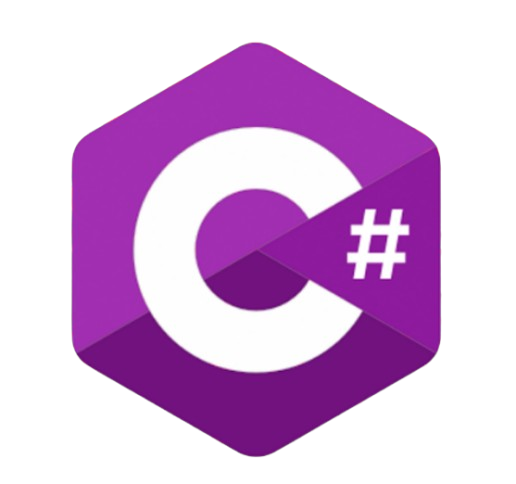
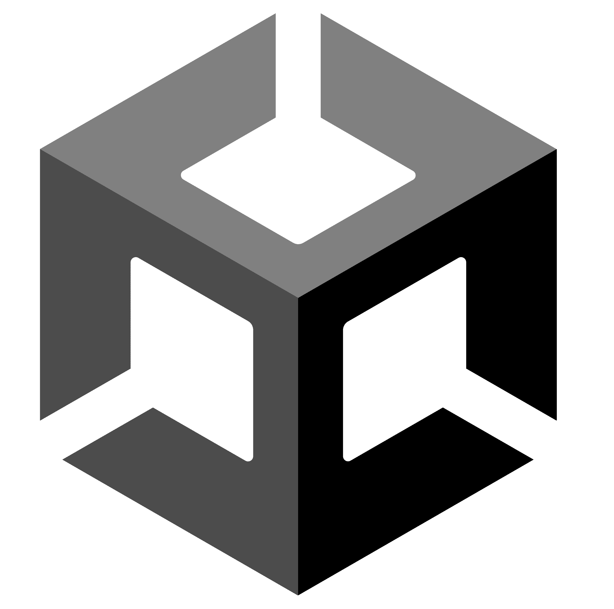

Get the Nuts é um jogo 2D desenvolvido por mim, centrado num esquilo determinado a recolher o maior número possível de bolotas antes da chegada do inverno. O objetivo principal é completar 25 níveis progressivamente mais desafiantes, testando a agilidade e a estratégia do jogador num ambiente simples, divertido e acessível.
No início do projeto, tentei criar os meus próprios sprites, mas após perceber que ainda não tinha a habilidade necessária para alcançar o estilo visual que idealizava, optei por utilizar assets gratuitos disponíveis online. Ainda assim, fiz questão de integrar animações e mecânicas que dessem vida ao jogo.
Até ao momento, o projeto conta com: Um Menu Principal totalmente funcional; O primeiro nível completo, com elementos interativos e animações; Um conceito sólido para os 25 níveis e mecânicas principais;
Apesar de atualmente ter colocado este projeto em pausa para explorar o desenvolvimento de jogos em 3D (uma área que recentemente despertou o meu interesse) Get the Nuts continua a ser uma experiência valiosa no meu percurso, onde desenvolvi competências em lógica de jogo, animação, organização de níveis e design de interfaces em 2D.
Processo de Desenvolvimento
Como desenvolvi o jogo Get The Nuts?
A ideia para o Get the Nuts surgiu durante uma fase em que tinha de decidir um progeto para a minha PAP, na altura eu queria praticar e consolidar os meus conhecimentos em desenvolvimento de jogos 2D. Queria criar algo simples, mas com potencial para ser divertido e desafiante. Comecei a pensar em mecânicas clássicas de plataformas e numa personagem cativante que tivesse um objetivo claro foi aí que imaginei um esquilo a preparar-se para o inverno, a correr contra o tempo para recolher o máximo de bolotas possível.
A inspiração veio também de jogos que jogava na infância, onde os níveis iam ficando mais difíceis à medida que avançávamos, exigindo mais precisão e estratégia. Quis recriar essa sensação de progresso e superação, mantendo um ambiente leve e animado.
O projeto nasceu assim: como uma forma de unir aprendizagem, criatividade e diversão e acabou por se tornar um marco importante no meu percurso, especialmente porque foi um dos primeiros jogos que comecei a desenvolver sozinha, com planeamento e ideias próprias.
Plataformas e linguagens usadas:


Desenvolvimento:
Inicialmente, tentei criar os meus próprios sprites usando o Paint. Desenhei vários que queria incluir no jogo, mas, ao colocá-los em prática, percebi que ainda não tinha a habilidade necessária para criar sprites com a qualidade que desejava. Por isso, optei por utilizar alguns sprites gratuitos disponíveis na internet.
Resultado(com os meus sprites):
Resultado(com os sprites online):
Este foi então o resultado final do primeiro nível, já com os sprites online ,uma versão simples, mas funcional, que me deixou satisfeita com o progresso e motivada para continuar a evoluir.
Depois de concluir o primeiro nível, achei que o meu jogo 2D precisava de um menu inicial, então comecei a trabalhar nele com o objetivo de torná-lo mais completo e organizado. Este foi o resultado final:
Atualmente, o jogo encontra-se neste ponto de desenvolvimento: com um menu funcional e o primeiro nível completo. Infelizmente, não voltei a fazer alterações porque acabei por mudar o meu projeto da PAP para um jogo em 3D. Além disso, sendo trabalhadora estudante, não tive tempo suficiente para continuar a desenvolver e finalizar este jogo.
No entanto, é um projeto que ainda penso em retomar e que espero conseguir concluir um dia.
Deixo abaixo um vídeo a mostrar o jogo em funcionamento: